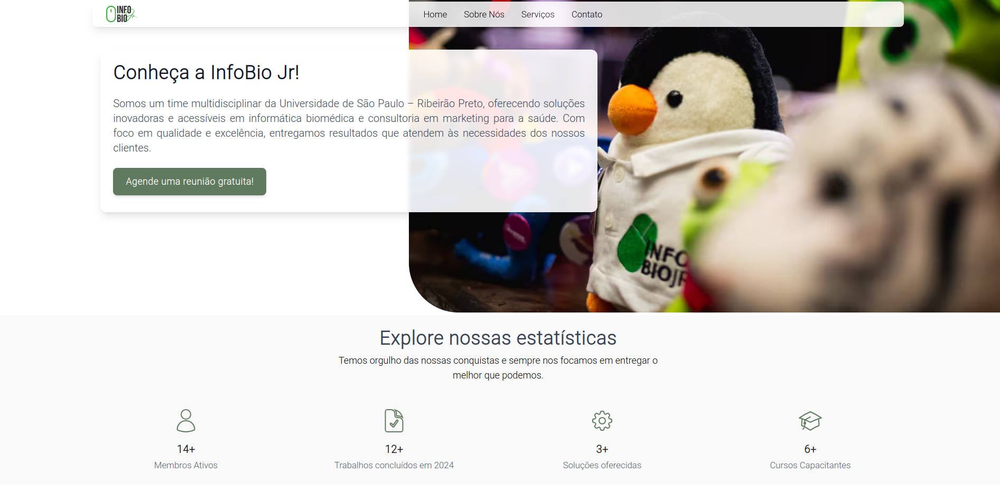

About
Portal made for the InfobioJr company, a junior company in the field of biotechnology. Hosted by São Paulo University (USP). Visit the site.

Portal made for the InfobioJr company, a junior company in the field of biotechnology. Hosted by São Paulo University (USP). Visit the site.
